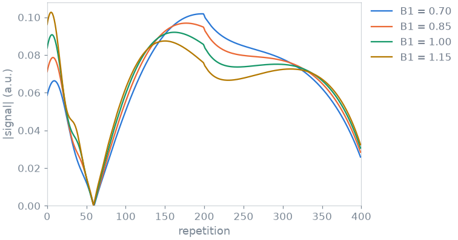
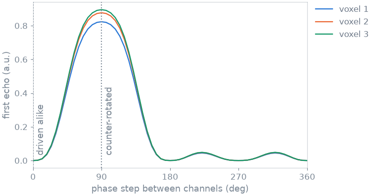
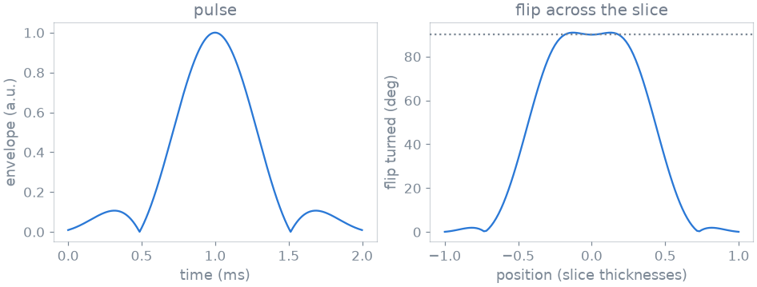
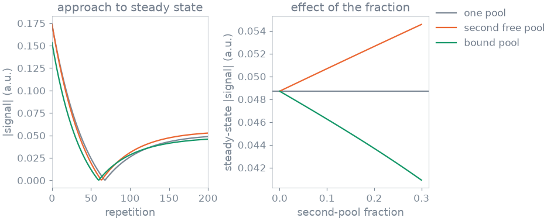
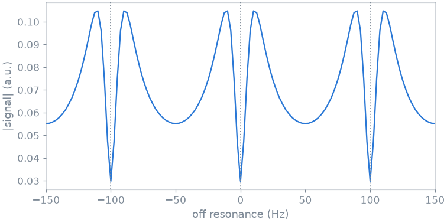
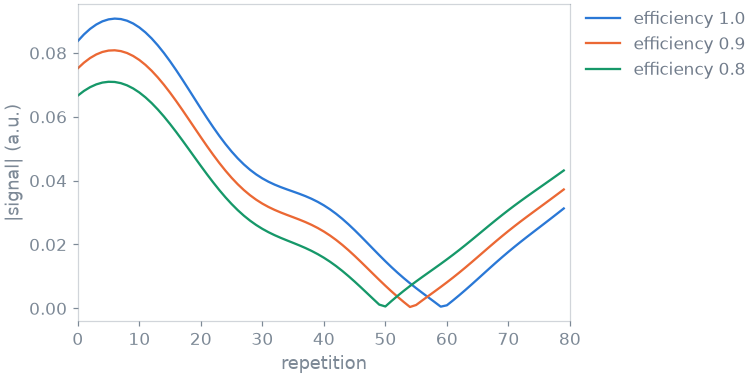
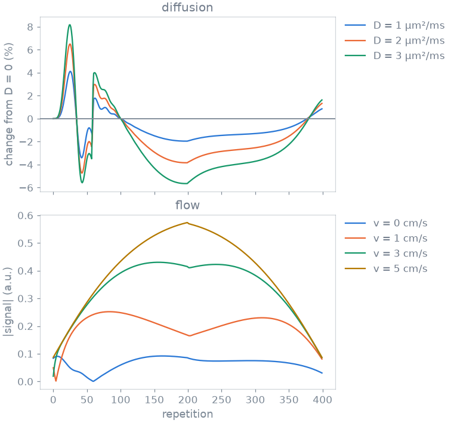

Note
Go to the end to download the full example code or to run this example in your browser via Binder.
2. Advanced physics#
In lesson 1 a tissue was T1 and T2. A voxel has more properties than that, and each one adds a term to the physics. In this lesson you add them to a fingerprinting train one at a time: the transmit field and the array that produces it, the shaped pulse of a real slice selection, a second exchanging pool and a bound pool, off resonance, an imperfect inversion, and diffusion and flow.
Learning objectives
Turn a physics term on by naming the tissue property in the call.
Describe a transmit array with per-channel sensitivities and an RF shim.
Simulate a shaped RF pulse across the slice.
Add an exchanging pool and a bound pool to a voxel.
Know that a property held at its neutral value costs nothing.
Previous: 1. Your first simulation. Next: 3. Custom signal model, where you write a sequence of your own.
Sequence#
The test sequence is an inversion-prepared fingerprinting train: 400 repetitions at TR = 10 ms, with a flip angle that rises from 5 to 55 degrees and falls back. The changing flip angle drives every echo pathway, so most of the terms below show on it. Where a term needs another readout to be visible, only the readout changes.
import numpy as np
import torch
from blochsim.simulators import MRFSimulator
FLIP_DEG = np.concatenate((np.linspace(5.0, 55.0, 200), np.linspace(55.0, 5.0, 200)))
fingerprinting = MRFSimulator(flip=FLIP_DEG, TR=10.0, TI=20.0, states=20)
WATER = dict(T1=1000.0, T2=80.0)
baseline = fingerprinting.simulate(**WATER)
A simulator declares the tissue properties its sequence is written in:
print(f"declared: {', '.join(fingerprinting.exposes)}")
declared: T1, T2, M0, B1, inv_efficiency
It accepts more than it declares. Every property in this lesson can be given to any simulator, and giving one is what asks for its physics:
print(f"accepted: {', '.join(fingerprinting.accepts)}")
accepted: T1, T2, M0, B1, inv_efficiency, B1phase, B0, T2prime, D, v, bound_fraction, bound_exchange, bound_T1, poolB_fraction, poolB_exchange, poolB_T1, poolB_T2, poolB_shift, poolC_fraction, poolC_exchange, poolC_T1, poolC_T2, poolC_shift, poolD_fraction, poolD_exchange, poolD_T1, poolD_T2, poolD_shift, poolE_fraction, poolE_exchange, poolE_T1, poolE_T2, poolE_shift
Transmit field#
B1 scales the flip angle a voxel turns. The nominal angle changes every
repetition, so a transmit error reshapes the signal trajectory instead of
scaling it. That is why B1 can be estimated together with T1 and T2, and why
ignoring it biases both.
transmit = torch.tensor([0.7, 0.85, 1.0, 1.15])
scaled = fingerprinting.simulate(**WATER, B1=transmit)

Transmit array and RF shim#
On a parallel-transmit system the field in a voxel is the complex sum of what
the channels put there. B1 and B1phase then have one row per channel,
and a ShimDefinition gives the amplitude and phase each
channel is driven at.
Take four channels whose sensitivities are a quarter turn apart in phase. Driven alike they cancel. Delaying each channel by one more phase step than the one before it undoes the offsets, and the field returns:
import math
import blochsim
from blochsim import ShimDefinition
from blochsim.simulators import FSESimulator
CHANNELS, VOXELS = 4, 3
sensitivity = torch.full((CHANNELS, VOXELS), 1.0 / CHANNELS)
sensitivity_phase = (
(torch.arange(CHANNELS)[:, None] * 2.0 * math.pi / CHANNELS)
.expand(CHANNELS, VOXELS)
.contiguous()
.float()
)
ARRAY = dict(
T1=torch.linspace(600.0, 1400.0, VOXELS),
T2=torch.linspace(40.0, 120.0, VOXELS),
B1=sensitivity,
B1phase=sensitivity_phase,
)
def first_echo(step_rad):
"""First echo of a train driven with a given phase step between channels."""
shim = ShimDefinition(
0,
(1.0,) * CHANNELS,
tuple(float(-channel * step_rad) for channel in range(CHANNELS)),
)
train = FSESimulator(
ESP=5.0, flip=torch.full((8,), 150.0), states=12, shims={0: shim}
)
return train.simulate(**ARRAY)[..., 0].abs()
steps_rad = torch.linspace(0.0, 2.0 * math.pi, 61)
swept = torch.stack([first_echo(float(step)) for step in steps_rad])

driven alike [0.0, 0.0, 0.0]
counter-rotated [0.8234, 0.8765, 0.8949]
A shim belongs to the pulse, not to the sequence: each RF event names the shim it is driven on, so an excitation and a refocusing pulse can use different ones.
Shaped RF pulse and slice profile#
The pulses so far are instantaneous. A slice-selective pulse turns a different angle at each position across the slice. That is a Bloch response, not a scaling, so it cannot be folded into the flip angle: the pulse has to be integrated.
blochsim takes the complex RF envelope as it comes off a Pulseq block or an MRD sequence description. The one used here is an SLR 90-degree pulse, 2 ms long, for a 5 mm slice, saved beside this file:
Give it to a simulator as pulse. across_slice is the number of
positions through the slice the pulse is integrated at. Without it the pulse
is evaluated at the slice centre only, which reproduces the hard-pulse answer:
REFOCUSED = dict(ESP=5.0, TR=3000.0, T1=830.0, T2=80.0, states=48)
angles = torch.full((48,), 150.0)
hard = FSESimulator(**REFOCUSED).simulate(flip=angles)
centre = FSESimulator(**REFOCUSED, pulse=excitation).simulate(flip=angles)
across = FSESimulator(**REFOCUSED, pulse=excitation, across_slice=21).simulate(
flip=angles
)

at the slice centre 0.8532 (hard pulse)
the shaped pulse there 0.8532
averaged over the slice 0.3121
the profile costs 63% of the signal
The flip is flat across the passband and falls away outside it. At the centre the shaped pulse gives the hard-pulse signal, which confirms the envelope is scaled correctly. Averaged across the slice the signal is much smaller. For a refocused train that is more than a scaling: the slice edges see a smaller refocusing angle, so they carry a different mix of echo pathways.
Exchange and magnetization transfer#
A second free pool, such as myelin water next to intra- and extracellular water, is recorded along with the first. A bound pool has a T2 of tens of microseconds, is never recorded, and exchanges magnetization with the water that is.
Five properties describe an exchanging free pool and three a bound pool. The values below are the white matter model of Malik et al. (Magn. Reson. Med. 2018), on a spoiled gradient echo train driven to steady state. Changing the readout of a simulator is a one-line subclass:
from blochsim import SPGRReadout
REPETITIONS, SPOILING_STEP = 200, 117.0
index = np.arange(REPETITIONS)
WHITE_MATTER = dict(T1=779.0, T2=45.0)
FREE = dict(poolB_exchange=2.0, poolB_T1=500.0, poolB_T2=20.0)
BOUND = dict(bound_exchange=4.3, bound_T1=779.0)
class SpoiledMRF(MRFSimulator):
readout = SPGRReadout
spoiled = SpoiledMRF(
flip=np.full(REPETITIONS, 10.0),
phases=SPOILING_STEP * index * (index + 1) / 2.0,
TR=5.0,
TI=0.0,
states=40,
)
one_pool = spoiled.simulate(**WHITE_MATTER)
with_free = spoiled.simulate(**WHITE_MATTER, poolB_fraction=0.2, **FREE)
with_bound = spoiled.simulate(**WHITE_MATTER, bound_fraction=0.117, **BOUND)
A pool fraction is a tissue property, so sweeping it is one call over many voxels. At a fraction of zero both must return the one-pool signal:
fractions = torch.linspace(0.0, 0.3, 31)
free_sweep = spoiled.simulate(**WHITE_MATTER, poolB_fraction=fractions, **FREE)
bound_sweep = spoiled.simulate(**WHITE_MATTER, bound_fraction=fractions, **BOUND)

one pool settles at 0.04870
a second free pool 0.05263
a bound pool 0.04583
at a fraction of zero the two rejoin it, to 3.9e-07
The two move the signal in opposite directions. A second free pool raises it, because that pool is recorded too. A bound pool lowers it, because the magnetization parked there is never read.
The properties are independent, so one voxel can carry both, eight names in one call:
three_pool = spoiled.simulate(
**WHITE_MATTER, poolB_fraction=0.2, **FREE, bound_fraction=0.117, **BOUND
)
both pools together 0.04958
Off resonance#
B0 is the off-resonance frequency in Hz. It rotates the transverse states
between events, and whether that reaches the signal depends on the sequence.
A train that dephases by a whole configuration order every repetition
separates the orders and is insensitive to it. A balanced train shows bands.
Only the readout changes below:
from blochsim import bSSFPReadout
class BalancedMRF(MRFSimulator):
readout = bSSFPReadout
offsets_hz = torch.linspace(-150.0, 150.0, 121)
banded = BalancedMRF(flip=np.full(64, 20.0), TR=10.0, TI=0.0, states=20).simulate(
T1=1000.0, T2=80.0, B0=offsets_hz, repetitions="auto"
)

The signal repeats every 1 / TR = 100 Hz, with the dotted lines at the band centres.
Inversion efficiency#
inv_efficiency is the fraction of the magnetization the inversion pulse
turns over. It changes the start of the train, where the inversion sets the
contrast, and the difference fades as the train goes on:
efficiencies = torch.tensor([1.0, 0.9, 0.8])
inverted = fingerprinting.simulate(**WATER, inv_efficiency=efficiencies)

the first repetition falls to 0.796 of the ideal;
by the four-hundredth the three agree to 3.7e-05
Diffusion and flow#
Diffusion and flow are read off the phase that a gradient winds onto each
configuration order, so the sequence has to say how much winding an order
stands for. Two simulator arguments do that: crusher_dephasing_rad, the
phase one crusher puts across a voxel, and voxel_size_m, the distance it
puts it across. Without them an order has no physical extent and neither term
does anything. The tissue properties are D in µm²/ms and v in m/s:
moving = MRFSimulator(
flip=FLIP_DEG,
TR=10.0,
TI=20.0,
states=20,
crusher_dephasing_rad=4.0 * math.pi,
voxel_size_m=1e-3,
)
diffusivities = torch.tensor([0.0, 1.0, 2.0, 3.0])
velocities = torch.tensor([0.0, 0.01, 0.03, 0.05])
diffusing = moving.simulate(**WATER, D=diffusivities)
flowing = moving.simulate(**WATER, v=velocities)
The train is only mildly diffusion-weighted, so the figure shows diffusion as the change from a voxel that does not diffuse, relative to its peak signal. Flow is large enough to read directly.

D = 3 departs from D = 0 by 8%
5 cm/s departs by 5.3x the unflowed signal
Diffusion damps the higher orders, so it costs signal where the train is built from them. Flow carries winding out of the voxel and brings unsaturated magnetization in, so it reshapes the train.
Unused properties#
None. A property held at the value where it has no effect (unit transmit, no off resonance, an empty pool) is treated as absent, and its term is left out of the kernel that runs. Naming six of them at their neutral values gives the baseline back:
idle = fingerprinting.simulate(
**WATER,
B0=0.0,
D=0.0,
v=0.0,
poolB_fraction=0.0,
bound_fraction=0.0,
inv_efficiency=1.0,
)
print(
f"largest difference: {np.abs(np.asarray(idle) - np.asarray(baseline)).max():.1e}"
)
largest difference: 0.0e+00
Every term in this lesson is one the kernels already carry. A term they do not, such as a third free pool or a gradient moment that varies along the train, is a change to blochsim itself and not a name in a call.
Specification#
What this lesson did, stated the way you would ask an agent for it:
With blochsim, simulate an inversion-prepared MRF train of 400 repetitions
(TR 10 ms, flip 5 to 55 to 5 degrees) in a voxel with T1 1 s and T2 80 ms.
Add, one at a time and by naming the tissue property: B1 scaling, a
four-channel transmit array with an RF shim, an SLR pulse integrated across
the slice, a second free pool and a bound pool (white matter, Malik 2018),
B0 on a balanced readout, inversion efficiency, and diffusion and flow.
Check that each property at its neutral value reproduces the baseline.
Total running time of the script: (0 minutes 11.438 seconds)